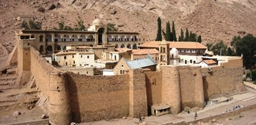

ابو سمبل
×
يعد معبد أبو سمبل الكبير، الواقع في النوبة بالقرب من الحدود الجنوبية لمصر، من بين المعالم الأكثر روعة في مصر، بناه الملك رمسيس الثاني
من الأسرة التاسعة عشرة تم قطعه كاملاً في الجبل، حوالي عام 1264 قبل الميلاد. يشتهر المعبد بتماثيله
الأربعة الضخمة جالسة والتي تزين واجهته، والتي انهار أحدها بسبب زلزال قديم ولا تزال بقاياه على الأرض.
تقف تماثيل الملك الضخمة على جانبي الصالة الرئيسية المؤدية إلى قدس الأقداس، حيث تجلس أربعة آلهة: آمون رع، ورع حورآختي، وبتاح، ورمسيسالثاني بصفته معبودًا،
وتم بناء المعبد بدقة عالية بحيث تدخل آشعة الشمس في المعبد يومين في السنة، في 22 فبراير
و22 أكتوبر، وتعبر الصالة الرئيسية ، وتضيء التماثيل الموجودة في عمق المعبد إلا المعبود بتاح.
يقع إلى الشمال معبدًا آخر محفور في الصخور معروف باسم المعبد الصغير، مكرس للإلهة حتحور والزوجة الملكية العظمى لرمسيس الثاني، الملكة نفرتاري،
وعلى واجهة المعبد الصغير، تقف تماثيلها الضخمة بنفس حجم تماثيل زوجها، في مثال نادر جدًا.
تم نقل المعبدين من موقعهما الأصلي في عام 1968 بعد بناء السد العالي بأسوان، الذي هدد بإغراقهما، وتم الانتهاء من عملية النقل بفضل الجهود
الدولية التي قادتها اليونسكو، وتم قبول المعبد في قائمة مواقع التراث العالمي في عام 1979.
وادي الملوك
×
دُفن معظم ملوك الأسرات الثامنة عشر والتاسعة عشر والعشرين من عصر الدولة الحديثة (حوالي 1550 - 1069 ق.م.)
في وادي نهر جاف على الضفة الغربية من مدينة طيبة القديمة (الأقصر الحديثة)، ومن هنا جاء اسمه وادي الملوك،
غير أن هذا الاسم ليس دقيقًا تمامًا نظرًا لأن بعض أفراد العائلة المالكة بخلاف الملوك تم دفنهم فيه،
وكذلك بعض الأفراد غير الملكيين، وإن كانوا رفيعي المستوى. وينقسم وادي الملوك إلى الواديان الشرقي
والغربي. يعد الجزء الشرقي الأكثر شهرة بينهما، حيث يحتوي الوادي الغربي على عدد قليل من المقابر،
ويضم وادي الملوك إجمالاً أكثر من ستين مقبرة بالإضافة إلى عشرين مقبرة غير مكتملة لا تزيد عن كونها حفر.
تم اختيار هذا الموقع لدفن الملوك بعناية؛ حيث يقع على الضفة الغربية للنيل،
وذلك لأن إله الشمس ينزل (يموت) في الأفق الغربي من أجل أن يولد من جديد،
ويتجدد شبابه في الأفق الشرقي، ولهذا السبب ارتبط الغرب بالمفاهيم الجنائزية
وكانت معظم المقابر المصرية القديمة تقع عمومًا على الضفة الغربية لنهر النيل لهذا السبب.
تم دفن ملوك الدولة الحديثة الأقوياء تحت قمة جرف صخري هرمي الشكل يحيط بالوادي. ولم يكن اختيار الوادي لنحت المقابر الملكية
من قبيل الصدفة، فقد كان الهرم رمزًا للبعث والحياة الأبدية، كما اعتبر الشكل الهرمي إشارة من
المعبودات، كانت هذه المنطقة والقمة نفسها، تحت سيطرة المعبودة حتحور: "سيدة الغرب".
دير سانت كاترين
×على سفوح جبل سيناء ، حيث تلقى موسى الوصايا العشر من الله ، يقع أحد أقدم الأديرة العاملة في العالم. يُعرف باسم دير القديسة كاترين ، اسمه الفعلي هو "دير الله المقدس لجبل سيناء". تم بناؤه بأمر من الإمبراطور البيزنطي جستنيان الأول (527-565 م) في 548-565 ميلادي لإيواء الرهبان الذين كانوا يعيشون في شبه جزيرة سيناء منذ القرن الرابع الميلادي.
استشهدت القديسة كاترين في أوائل القرن الرابع الميلادي حيث يحمل الدير اسمها لإكتشاف رهبانها جسدها بالقرب من جبل سانت كاترين في القرن التاسع الميلادي ، حيث تم وضعه من قبل الملائكة بعد استشهادها.
ويشتمل الدير على هياكل متعددة ، أهمها كنيسة تجلي السيد المسيح المخلص ، والتي تضم في حد ذاتها تسع كنائس أصغر. إحدى هذه الكنائس هي الكنيسة المحترقة التي تكلم عندها الله مع النبي موسى. يشتمل دير سانت كاترين أيضًا على عشر كنائس أخرى ، وأماكن إقامة الرهبان ، وقاعة طعام ، ومكبس زيتون،وصناديق عظام الموتى، ومسجد فاطمي من القرن الثاني عشر الميلادي ، ومكتبة تضم كتبًا نادرة و 6000 مخطوطة.
قلعة صلاح الدين الايوبي
×تعد قلعة صلاح الدين أحد أهم معالم القاهرة الإسلامية، وإحدى أعرق القلاع الحربية التي شيدت في العصور الوسطى، وقد أتاح موقعها الإستراتيجي أعلى جبل المقطم إطلالة رائعة على كافة معالم القاهرة التاريخية، ووفرت الأسوار المنيعة حول عواصم مصر الإسلامية مع القلعة مزيد من الحماية ضد أى اعتداء.
بدأ صلاح الدين الأيوبي في تشييد هذه القلعة فوق جبل المقطم في عام 572هـ /1176م في موضع كان يعرف بقبة الهواء، ولكنه لم يتمها في حياته، وأتمها السلطان الكامل بن العادل (604هـ/ 1207م)، فكان أول من سكنها واتخذها دارًا للملك، وظلت مقرًا لحكم مصر حتى عهد الخديوي إسماعيل الذي نقل مقر الحكم إلى قصر عابدين بمنطقة القاهرة الخديوية.
شهدت القلعة العديد من الأحداث التاريخية منذ العصر الأيوبي حتي نهاية أسرة محمد علي التي تولت حكم مصر بداية من القرن التاسع عشر حتى قيام ثورة يوليو 1952م. تمت إضافة العديد من المنشآت بالقلعة على مر العصور والتي من أهمها: جامع محمد علي، جامع الناصر محمد بن قلاوون، جامع سليمان باشا الخادم، وذلك بالإضافة إلى عدد من المتاحف منها: متحف قصرالجوهرة، الشرطة، والحربي.
الدير البحري
×اشتهر موقع الدير البحري باحتوائه على المعبد الجنائزي للملكة حتشبسوت (حوالي1473- 1458 ق.م) بالبر الغربي لمدينة الأقصر. ويتكون المعبد من ثلاث طبقات متدرجة في باطن الوادي، حيث كانت تقام فيه الطقوس الجنائزية لكل من الملكة حتشبسوت بالإضافة إلى أبيها الملك تحتمس الأول، حيث كانت تقدم في القرابين كي تضمن روح الملكة حياة أبدية سالمة في العالم الآخر.
وكان موقع الدير البحري يحمل قدر من القداسة لأنه مرتبط بالمعبودة حتحور التي ترعى ملوك مصر في مقدمتهم المعبود حورس الحاكم الأول والخرافي لمصر. وكان من المعتقد أن تجسيد تلك المعبودة في التلال ذاتها التي يقع ظلها على معبد حتشبسوت، وعلى الجانب الآخر منها حيث تقع مقابر بعض أشهر ملوك مصر القديمة بالدولة الحديثة بمنطقة وادي الملوك. فنرى اللوحات التي تحمل صلوات لحتحور في صورة بقرة تخرج من هذه الجبال والتي تظهر قمتها على شكل هرمي.
وكان موقع المعبد الجنائزي بالبر الغربي مرتبطًا بفكرة غروب الشمس حيث رحلة رب الشمس السفلية في العالم الآخر. كما أن هذا المعبد على الجانب الآخر من معبد آمون بالكرنك بالبر الشرقي، حيث كانت تماثيل المعبود آمون وزوجته موت وابنهما خونسو تسير في موكب احتفالي سنوي يعرف باسم عيد الأوبت وعيد الوادي الجميل، ليعبر النيل ويزور المعابد الجنائزية الملكية ومنها معبد حتشبسوت والذي كان إحدى المحطات المهمة لهذا الموكب.
وقد سبق حتشبسوت ملك آخر في إقامة معبده الجنائزي في تلك المنطقة المهمة بنحو 600 عام، وهو الملك منتوحتب نب حبت رع (حوالي 2055-2004 ق.م) من الدولة الوسطى، حيث شيد معبده على شكل متدرج اقتبست الملكة حتشبسوت تصميم معبدها منه.
فيله
×
تشمل آثار فيله العديد من المباني التي يعود تاريخها إلى العصر البطلمي (332-30 ق.م.)، وأبرزها ذلك المعبد الذى بدأه بطلميوس الثانى فيلادلفوس
(285 – 246 ق.م.)، والذى كان مكرسًا لإيزيس أم حورس رب الملكية، وهناك منظر في الماميزي أو
حجرة الولادة، حيث كان يتم الاحتفال بولادة حورس، تظهر فيها إيزيس وهي ترضع ابنها حورس في الأحراش.
يعتبر معبد إيزيس واحدًا من أكثر المعابد المصرية القديمة استمرارًا؛ حيث ظل المعبد يؤدي دوره حتى عهد الملك البيزنطي جستنيان الأول
(527 – 565 م) والذي أمر بإغلاق كل المعابد الوثنية، حيث نقش كاهن يدعى اسمت-اخوم آخر نص هيروغليفي ويرجع ذلك
إلى القرن الرابع الميلادي (394م). تم تحويل المعبد إلى كنيسة وتم محو العديد من نقوش المعبد.
يقع بجوار معبد إيزيس معبدًا مكرسًا لحتحور بناه بطلميوس السادس فيلوماتور (180 – 145 ق.م)، وأغسطس أول إمبراطور لروما
(30 ق.م. – 14م). ولا تزال مقصورة تراجان (98 – 117 م) المقامة أمام معبد فيله قائمة على الرغم من أن سقفها لم يعد
موجودًا، وكان الترتيب المنتظم لأعمدتها الرائعة قد جذب أنظار الرحالة وقاموا بوصفه وتصويره. كانت إيزيس المعبودة
الرئيسية للمنطقة، حيث تم تصوير الإمبراطور يقدم القرابين لها ولزوجها أوزير وابنهما حورس.
تم نقل كل هذه الآثار من جزيرة فيلة الأصلية إلى جزيرة أجيلكيا القريبة خلال حملة اليونسكو
للنوبة في الستينيات لإنقاذ المواقع التي غمرتها مياه النيل في عملية بناء السد العالي بأسوان.
قلعة قايتباى
×
فى ربيع الاول سنة 882هـ ( يونيه 1477م) احتفل السلطان قايتباى فى القاهره بالمولد النبوى و بعد ما انفض المولد نزل من قلعة الجبل و عدا لبر الجيزه من غير الناس ماتاخد
بالها منه ، و من هناك سافر على اسكندريه فى صحبة عدد كبير من الخاصكيه و المماليك السلطانيه و امرا مصر
الكبار اللى كان منهم الامير ازبك اتابك الجيش المصرى و بانى حى الازبكيه و الامير يشبك الدوادار و غيرهم.
اتزينت اسكندريه عن اخرها و اترفعت الاعلام و الرايات فى كل نواحيها ، و لما وصل قايتباى خرجت الجموع تستقبله بفرحه كبيره و فى مقدمتهم والى اسكندريه وقتها
" قجماس الاسحاقى ". اصطفت الناس فى شوارع المدينه و دخل قايتباى فى موكب ابهه باعداد كبيره من
الحصنه المتزينه بالاقمشه الملونه و سروج الدهب و الفضه و مشى الامرا و المماليك قدامه و كان يوم مشهود من
ايام اسكندريه. اتنثر الدهب على قايتباى و من كتر الزحمه و التدافع كان قايتباى حايقع من على حصانه.
زيارة السلطان قايتباى لاسكندريه كانت زياره تاريخيه لان اسكندريه من عهد السلطان الناصر فرج بن برقوق مفيش سلطان زارها.
الاشرف شعبان كان زار اسكندريه سنة 1365 على راس جيش بعد ما اعتدى ملك قبرص بيير دى لوزينان
(بطرس الاول) على المدينه فى الهجمه المعروفه باسم " وقعة اسكندريه " و زارها كمان مره و دخلها فى
موكب سنة 1369 ، و فى سنة 1411 زارها الناصر فرج ودى كانت اخر مره يزور سلطان مصر مدينة اسكندريه.
قعد قايتباى فى اسكندريه تلت تيام و زاروه تجارها و اعيانها و لعب كوره مع الامرا و راح على المكان اللى كان فيه فنار اسكندريه اللى كان من
عجايب الدنيا السبعه و امر ببنى برج على اساسه فابتدا بنا " البرج " اللى بقى معروف بقلعة قايتباى.
بني حسن
×
تقع جبانة بني حسن بأحد أكثر المناطق خصوبة في مصر. أدت هذه الخصوبة إلى ازدهار اقتصادي،
هذا الموقع يضمّ بعض مقابر الدولة الوسطى الأكثر إثارة للإعجاب.
هذه المقابر من أفضل المقابر المحفوظة أيضًا حتى وقتنا الحالي.
تتكون الجبانة من جزئين، علوي وسفلي.
تقع الجبانة السفلية، التي تحتوي 800 مقبرة، على منحدرات التلال، وتضمّ العديد من المقابر البئرية.
تخص مقابر الجبانة السفلية موظفين مختلفين من عصر الانتقال الأول(حوالي 2181-2055 ق. م) إلى الدولة الوسطى (حوالي 2055-1650ق. م)
ولكن يوجد بها مقابر تابعة لأواخر عصر الدولة القديمة (حوالي 2345-2181 ق. م) مثل مقبرة إيبي.
بينما تضمّ الجبانة العلوية 39 مقبرة منحوتة في الصخر، ما يعني أنها مقطوعة أفقيًا في صخور المنحدرات.
زُينت جدران 12 من هذه المقابر بمشاهد مُفصلة مُرسومة بشكل جميل،
وتصور مناظر من الحياة اليومية، تشمل الزراعة والحرف والمهن المختلفة،
ومجموعة من الأنشطة مثل الصيد والألعاب المختلفة، وحتى مشاهد الحرب، ووصول الأجانب إلى الأراضي المصرية.
هضبة الجيزة
×
تعد هضبة الجيزة من بين أشهر المواقع السياحية منذ العصور القديمة وحتى اليوم.
وتضم تلك الهضبة مقابر ملوك الأسرة الرابع (حوالي2613- 2494ق.م) وهي أهرام كل من خوفو
(حوالي2589-2566 ق.م) وابنه خفرع وحفيده منكاورع بالإضافة إلى تمثال أبو الهول الشهير
. ويعد هرم خوفو هو الأكبر والأقدم بين تلك الأهرام والأطول في العالم طيلة 3800 عام.
ويحيط بتلك الأهرامات العظيمة آثارًا أخرى، حيث كان لكل هرم مجموعة هرمية بالإضافة إلى أهرام
الملكات والهريم الصغير الجانبي الذي كان هرمًا رمزيًا للملك، وكذلك كانت هناك
مصاطب خصصت لدفن كبار الشخصيات وأفراد العائلة الملكية، ومراكب خوفو المعروفة باسم
مراكب الشمس. وكانت المجموعة الهرمية لكل ملك تتضمن معبدين أحدها هو معبد الوادي ومنه
طريق صاعد جوانبه مزخرفة يؤدي إلى معبد علوي والمعروف باسم المعبد الجنائزي
المتاخم للهرم. وكان الكهنة يقومون بطقوس الدفن والجنازة الخاصة بالملك المتوفى داخل تلك
المعابد حيث يتحول إلى معبود وتقدم القرابين الثرية لروحه كي ينعم بالسلام في العالم الآخر